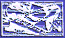
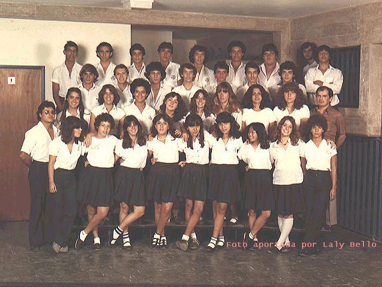
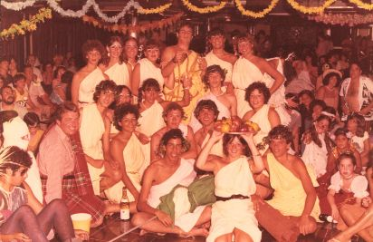
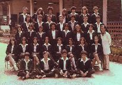
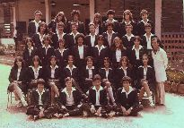
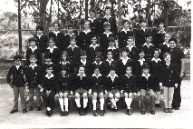
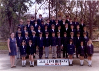

Emil Friedman 1981
Contenido
bienvenidos
¿en qué
andamos?
en contacto
las fotos
Los que se fueron
Astrid
Rodriguez
Carlos
Camacho
Gustavo
Rivas
Prof. Emil
(Abuelito) Friedman
Los que estamos
Los que faltan
En Contacto
Para mantenernos en contacto creamos un foro electrónico. Para suscribirte, usa esta casilla:

|
Incorpórate al grupo Friedman 81 | |
Reencuentro de 25 años de graduados.
Van a ser múltiples ocasiones, en múltiples lugares de Venezuela y en otros paises.
Si quieres participar, no dejes de conectarte al foro.
Reencuentro de primeros de julio de 2005
Estamos ya planeando el reencuentro para los primeritos días de julio de 2005. Lo más seguro es que los expatriados Laly, Gaby, y Kico asistan con sus combos.
Para enterarte de los detalles, suscríbete al foro, o envíale un emilio a Marta, Laly, Juancarlo, etc.
Reencuentro el 11 de junio de 2005
Estamos planeando la celebración de los 25 años de graduados el año que viene, y los planes de reencuentro ya comenzaron.
Tuvimos un mini reencuentro en Caracas el sábado 11 de junio en casa de Juanca y Cora. La clásica crónica de Eduardo (Caballo) Villasmil y las fotos están aquí.
Reencuentro el 19 de Junio de 2004
El próximo sábado 19 de Junio nos reuniremos en casa de Marta a las 6:00 PM, con chamos y todo. La idea es preparar mucha pasta, y varias salsas. Laly y Marta se van a encargar de eso. Los demás lleven los postres y la bebida. Si tienen cualquier duda, o no saben la dirección, contacten a Marta, Laly, o Juancarlo.
Prof. Emil (Abuelito) Friedman
Praga 1908 - Caracas 2002
El Prof. Friedman
falleció en Caracas el 24 de abril del 2002 a la edad
de 94 años. Muchos de nosotros asistimos a aplaudirle
y a cantarle en su despedida en nombre de todos los de
nuestra graduación, y otros tantos le escribieron algunas palabras de homenaje.
Compañeros escuchad!
Compañeros escuchad!
Nuestra mú-si-ca.
Trabajemos con tezón,
estudiemos con afán,
con dedi-ca-cíon.
Cuando suena la canción,
late alegre el corazón,
y el deber, y el deber no pesa más!
En la vida,
el dolor no reinará.
La canción, la canción triunfará!
Reencuentro Mandarín
El jueves 22 de agosto del 2003 nos reunimos en casa de los padres de Natalia para verle la cara al Tampiano Francisco Hung quien nos visita por algunas semanas.
Han habido otras reuniones, pero nuestro cronista oficial, Eduardo Villasmil, andaba jubilado, por lo que no quedaron registradas.
La crónica y las fotos de este reencuentro se encuentran aquí.
Reencuentro Decembrino
El sábado 29 de diciembre del 2001 tuvimos un reencuentro al que asistieron una cantidad de compañeros que no habían estado en las otras reuniones.
Gracias de nuevo a Laly y a Rummel por ser tan buenos anfitriones.
La crónica por Eduardo Villasmil y las fotos están aquí.
El Reencuentro en casa de Laly
Tuvimos nuestro segundo reencuentro oficial el 24 de noviembre del 2001 en casa de Laly Bello por invitación de ella y su esposo Rummel. Las fotos de la cámara de Juanca están aquí.
Esta vez estuvieron también Tania Di Batista, su esposo Virgilio y sus dos chamos, Antonio (Doni) D'Onofrio, Héctor Morán, Fancisco Gozon y Mary, su barrigona, y Eduardo, el esposo de Cristina Pacheco. Faltó un gentío.
Los niños jugaron toda la tarde en la piscina y en ej jardín, y tuvieron oportunidad de enviarle sus cartas a Santa vía globo de helio expreso (esto estuvo un poco accidentado).
Annie y Melanie, las hijas de Laly y Rummel, nos deleitaron junto a sus amigas con unos bellísimos bailes flamencos, y Rummel preparó la mejor parrilla del mundo, incluídos cientos de suculentos pinchos de carne y pollo que los niños devoraron con avidez.
Gracias a Laly y Rummel por ser tan buenos anfitriones.
La Reunión en Casa de Eduardo
Estuvimos en casa de Eduardo Villasmil el viernes 26 de Octubre del 2001. Bebimos un montón de cerveza y güisqui, comimos chicharrón picante con limón, y gozamos un montón. Marta escribió una crónica del evento, lo que llevó a Eduardo a cumplir con su deber, y escribir la suya.
Todos llegamos después del trabajo, así que no nos preparamos mucho, y no hay fotos :-(
El Reencuento en casa de La Polla
El 20 de octubre del 2001 nos reunimos, en casa de los padres de La Polla, la mayoría con nuestras respectivas medias naranjas y retoños.
El reencuentro fue muy emocionante y muy divertido. Todos se fueron contentos. Pueden leer la crónica que hizo Eduardo (Caballo) Villasmil aquí.
Las fotos de mi cámara están aquí. También están las fotos que tomó Carlitos.
Bienvenidos
Bienvenidos a la página de la graduación 1981 del Colegio Emil Friedman. Estamos organizando varios reencuentros para celebrar los 20 años de nuestra graduación.
¿En qué Andamos?
Estamos tratando de contactar a todos nuestros compañeros, tanto a los que se graduaron con nosotros en 1981, como a los que dejaron el colegio antes de ese año.
A la izquierda aparecen los nombres de aquellos de los cuales ya sabemos. Más abajo están los nombres de quienes nos falta contactar. Si te acuerdas de otro nombre, o sabes como contactar a alguno de ellos, por favor dile a Juancarlo.
Los que se fueron
Nuestros queridos compañeros Astrid Rodriguez, Carlos Camacho, y Gustavo Rivas ya fallecieron, pero estarán presentes en nuestro recuerdo en cada reencuentro.
Para más información, visita la página: http://groups.yahoo.com/group/friedman81
Si tienes problemas para suscribirte, envía un e-mail a Eduardo Villasmil o Juancarlo Añez .
Las Fotos
Puedes hacer "click" en las fotos a la derecha para verlas ampliadas. Los nombres de las personas aparecen debajo de las fotos. Hay muchos espacios por rellenar por falta de memoria. Si recuerdas el nombre de alguien, avisa.
Hay más fotos que ver en la página de fotos
Si tienes fotos de otros años u otras secciones, y tienes posibilidad de escanearlas, por favor envía una copia por e-milio.



 

